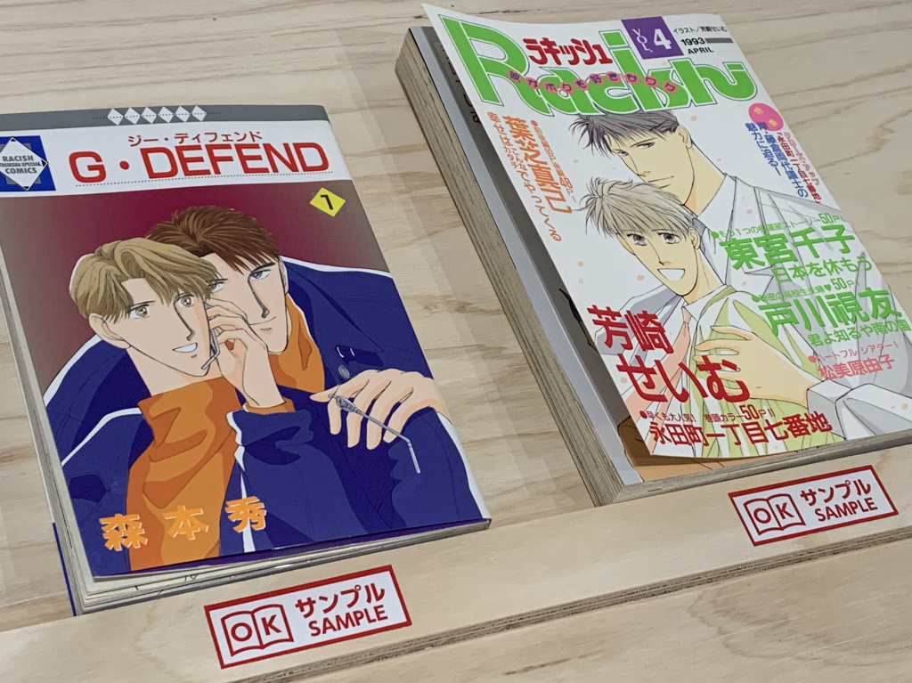
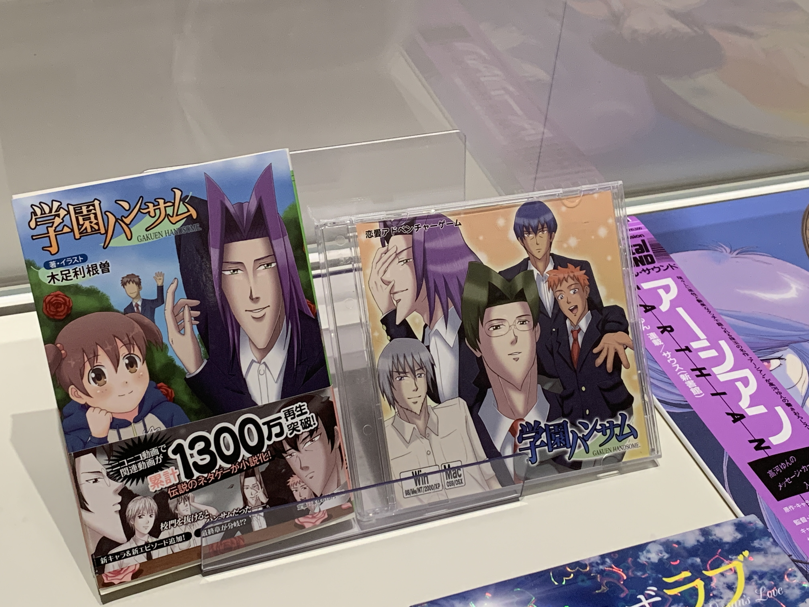
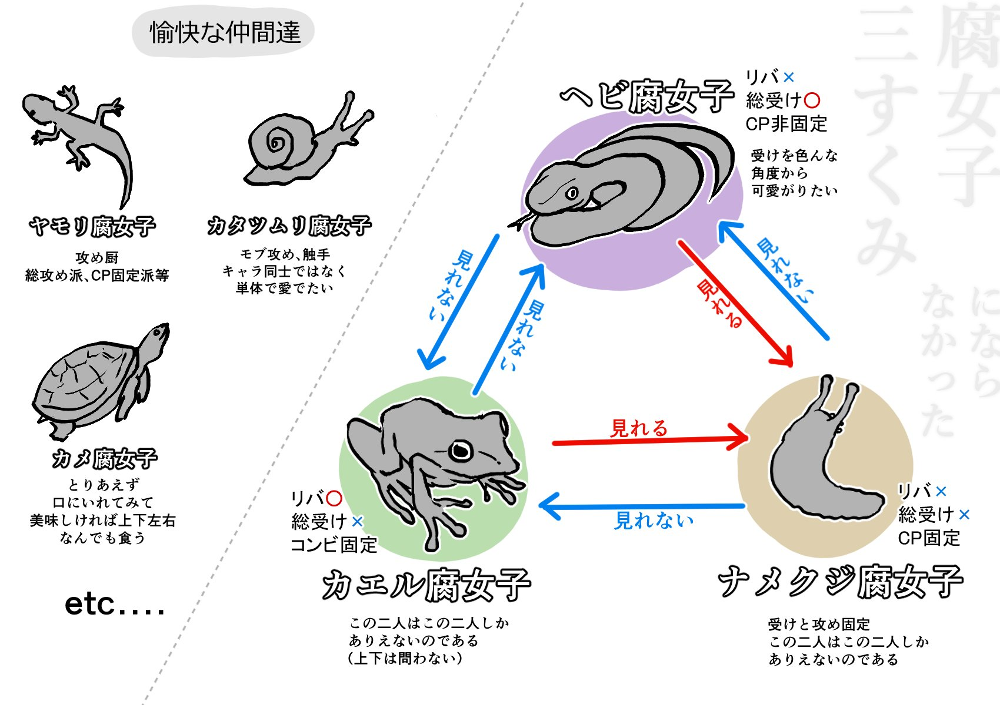

This is Part Two of a two-part series. Part One can be found here.
For a limited time from May 20th ~ July 16th, the Kadokawa Culture Museum ran a "First Boy's Love Exhibit" covering the roots and history of the Boy's Love (BL) genre in Japan and abroad. I attended during that time.
In Part One, I wrote about the history of Japanese BL from the 1960's to 1990's. After the 90's BL boom, trends in the BL genre began to emerge. In Part Two, I'll be covering tropes, parodies and modern BL in Japan, and my impressions of the exhibit overall.
1990's Tropes in BL/Yaoi
Pulling back from serious debates on feminism and queer liberation, as the BL and yaoi genre became more diverse, clear tropes began to emerge. This part does not cover barazoku and geicomi, which are genres distinct from BL and deserve their own article (but not today).
Some tropes in BL include:
- seme/uke roles: the protagonist and the main love interest were often given the role of either seme (top) or uke (bottom). These roles were often fixed.
- visible size difference: in some BL, the uke was physically smaller and more feminine in appearance; the seme, more broad-shouldered and masculine. Even in works whose characters were both masculine-coded there typically was, even if slight, a size difference.
- disproportional hands: characters had exaggerated hands and fingers disproportional to their bodies. (CJ Note: This is also known as "yaoi hands" in the English-speaking fandom.)
- triangular faces: masculine-coded characters would typically have a strong, triangular chin and angular appearance.
Coming back to the manga in the exhibit, I noticed strong tropes, especially in the manga from the 90's and 00's. The characters with distorted bodies that clearly showed who was the seme and uke in the work.

The exhibit covered only manga through publishers, not dōjinshi (fan-made works) but fanworks were a strong undercurrent of the BL community. Some dōjinshi authors like Maki Murakami (author of Gravitation), went on to make their own popular original BL series.
2010 Parodies of Tropes in BL
Naturally, once tropes became overused, parodies emerged. In both in the Japanese-speaking and English-speaking fandoms, dōjinshi artists of the 2010's poked fun at BL tropes by making parodies.
- Gakuen Handsome: a parody game based on a popular BL series, Gakuen Heaven. The players meet different boys, drawn with overexaggerated features and date them. (Game on DLSite)
- Gakuen Handsome Fighters: the sequel to Gakuen Handsome, a side-scrolling beat 'em up where you play as characters in Gakuen Handsome and take out street trash.
- Dorito-faced Senpai and Shota Boy: This was not featured in the exhibit, but it is an example of the English-speaking fandom noticing these tropes and making their own parodies. This is a parody of seme characters having a masculine, angular chin and uke characters typically looking underage or being underage, or shota. (Original on Webtoons)

An honorable mention for meta-analysis of the BL fandom goes to Kankai na Fujoshi: a parody comic by _k_a_o_m_o_j_i_ describing different "types" of fujin as garden animals. For instance, Snake has a fixed uke character they love; and cannot read content from Frog, who accepts the seme and uke switching roles. (Original on Twitter| Book)

Some of these parodies were done
Post 2010: Modern BL and Beyond
- Momo to Manji - Kino, nani wo tabeta? https://www.nippon.com/en/in-depth/d00607/BL Conventions Across the World
Final Impressions
- the wallAdditional Resources
- The Evolution of “Boys' Love” Culture: Can BL Spark Social Change? Fujimoto, Yukari for Nippon.com.
About the Author
CJ is a non-binary fujin, designer and one half of Studio Terranova, a video game studio making LGBTQ+ games. They used to be into BL as a young adult, and took a 10 year long break. During this time they became a queer and feminist advocate.
They enjoy BL and like to talk about it not only from a fan lens, but from a historical and queer lens, too. If you liked this post, consider buying them a coffee.